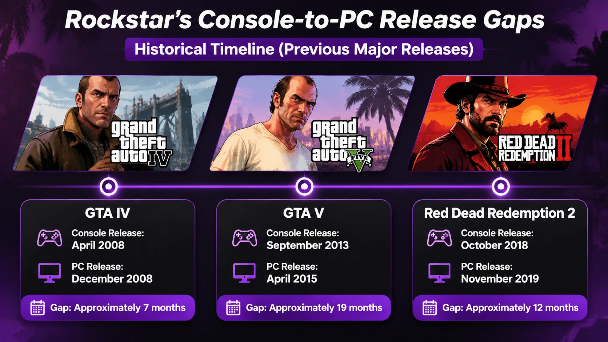
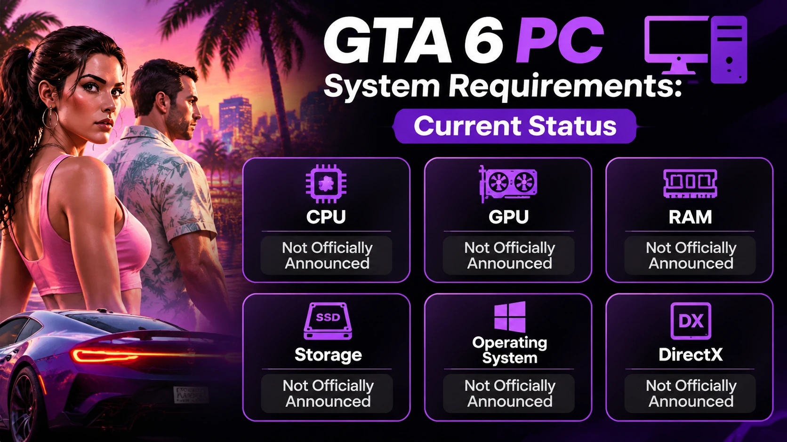

GTA 6 PC is one of the biggest topics among Windows gamers who want to experience Rockstar Games' latest open-world adventure on their computers. Grand Theft Auto VI launched on November 19, 2026, for PlayStation 5 and Xbox Series X|S, but Rockstar has not announced an official PC version or release date as of November 25, 2026.
This leaves PC players with several important questions. Will GTA 6 be available on Windows? When will the PC version arrive? What hardware will be needed to run it? Can players download the game right now? This guide covers the confirmed information, industry reports, previous Rockstar PC releases, expected technical considerations and download safety.
Will GTA 6 Be on PC?
GTA 6 has not been officially announced for PC. Rockstar Games currently lists PlayStation 5 and Xbox Series X|S as the supported platforms in its official platform information. Its November 19 launch announcement also confirms the game's availability on those two console platforms.
However, the absence of a PC announcement does not mean Rockstar has permanently ruled out a Windows release. The company has not confirmed a PC version, but it has also not announced that one will never happen.
For PC gamers, the important distinction is between an official announcement and an industry prediction. Several gaming publications have discussed a possible PC release, but players should wait for confirmation from Rockstar before treating any proposed date as final.
GTA 6 PC Release Date: What Is Officially Known?
There is currently no confirmed GTA 6 PC release date. The console version arrived on November 19, 2026, but Rockstar has not published a corresponding Windows release schedule.
A GamesBeat report published in October 2026 suggested that Rockstar was targeting the first quarter of 2027 for a PC version. The report cited four anonymous industry sources familiar with the studio's plans. However, Rockstar did not confirm the reported window.
This is an interesting development, but it should not be confused with an official release announcement. Internal development schedules can change, and a reported target does not guarantee that a game will be ready for release during that period.
PC players should therefore treat January through March 2027 as an unconfirmed reported window, not an established GTA 6 release date PC owners can rely on.
When Will GTA 6 Be on PC?
The exact timing remains unknown. Looking at Rockstar's previous major releases can provide some historical context, although it cannot establish the company's plans for its latest game.
Rockstar has previously released major Grand Theft Auto titles on consoles before bringing them to Windows. Grand Theft Auto V and Red Dead Redemption 2 both followed separate console-to-PC release schedules.
| Game | Initial console release | PC release | Approximate gap |
|---|---|---|---|
| GTA IV | April 2008 | December 2008 | 7 months |
| GTA V | September 2013 | April 2015 | 19 months |
| Red Dead Redemption 2 | October 2018 | November 2019 | 12 months |

These historical examples show that Rockstar does not always release its major games on PC simultaneously with consoles.
Nevertheless, previous release schedules should only be used as context. They do not prove that GTA 6 will follow the same timeline. The studio may choose a different development and release strategy this time.
What Could Affect the GTA 6 PC Release Date?
Several factors could influence the timing of a future Windows release.
First, PC optimization requires attention to different hardware configurations. Unlike a console environment, Windows gaming involves a wide range of processors, graphics cards, memory configurations and storage devices.
Second, Rockstar may want to ensure that the PC version meets its quality expectations. Performance optimization, graphics settings, compatibility testing and stability can all influence development time.
Third, the company may have a broader platform and commercial strategy. Its decisions about future updates, online features and platform releases could also influence its schedule.
These are possible considerations, not confirmed explanations from Rockstar.
GTA 6 PC Requirements: What Hardware Will You Need?
Official GTA 6 PC requirements have not been published. Rockstar has not released minimum or recommended Windows specifications, so there is currently no verified GPU, CPU, RAM or storage requirement for a PC edition.
Players should be careful when browsing websites that publish supposedly confirmed system requirements. Without an official PC version announcement and technical specification sheet, those numbers are estimates at best.
| Hardware component | Official GTA 6 PC requirement |
|---|---|
| Operating system | Not announced |
| Processor (CPU) | Not announced |
| Graphics card (GPU) | Not announced |
| RAM | Not announced |
| Storage space | Not announced |
| DirectX version | Not announced |
| SSD requirement | Not announced |

Will GTA 6 Need a High-End Gaming PC?
It is too early to give a reliable hardware recommendation specifically for GTA 6 PC. However, the game's large environments, detailed visual presentation and complex open-world design make performance optimization an important subject to watch.
Players planning to upgrade their computers should avoid purchasing expensive components solely on the basis of unofficial GTA 6 requirement lists.
A sensible approach is to compare hardware after Rockstar publishes verified specifications. Independent performance benchmarks will also help players understand how different GPUs and processors handle the actual Windows release.
Is GTA 6 Coming to PC Through Steam?
Rockstar has not officially announced a PC storefront or Steam release for GTA 6. The company's published platform information currently names PlayStation 5 and Xbox Series X|S.
Steam is an important distribution platform for Windows gamers, and Rockstar has released previous PC titles through it. However, that history does not confirm a Steam version of GTA 6.
The same caution applies to other digital stores and launchers. Until Rockstar publishes official PC distribution information, players should not assume that a particular storefront will carry the game or that a specific purchase date is available.
GTA 6 Download PC: Is It Available Yet?
There is no legitimate official GTA 6 PC download available as of November 25, 2026. The game has launched on consoles, but Rockstar has not announced a downloadable Windows edition.
This is particularly important because fake GTA 6 download websites have already appeared. Some websites advertise supposed PC installers, streaming clients or early-access versions to attract players searching for the game.
Security researchers at Bitdefender reported a fake GTA VI Windows client that used a malicious PowerShell command to install information-stealing malware. Other security researchers have also documented fraudulent downloads designed to steal gaming credentials and other sensitive information.
PC gamers should follow these precautions:
- Download games only through verified publisher or authorized storefront channels.
- Avoid unofficial GTA 6 PC installers, torrents and suspicious ZIP archives.
- Never disable antivirus protection to install an unverified game file.
- Do not run unknown PowerShell commands copied from gaming websites.
- Avoid websites requesting account passwords or payment details for unofficial early access.
The safest option is to wait for Rockstar's official PC release announcement and purchase information.
Is GTA 6 Coming to PC? Latest Official Updates
The most reliable way to follow GTA 6 PC developments is to monitor Rockstar's official website, Newswire and customer support announcements.
There are three types of information players should distinguish.
Official information: Rockstar's confirmed platforms, release announcements and published technical specifications.
Credible industry reporting: Reports from established gaming publications that identify their sources and clearly explain what remains unconfirmed.
Rumors and speculation: Social media posts, anonymous claims without verifiable reporting, unofficial release calendars and supposed leaked system requirements.
Keeping these categories separate helps readers avoid misinformation. It also makes it easier to identify when a genuine development occurs.
For the latest information, check the official Rockstar Games GTA VI website and Rockstar Newswire.
Frequently Asked Questions About GTA 6 PC
Will GTA 6 Be on PC?
Rockstar has not officially announced a GTA 6 PC version or release date. Currently, the game is available on PS5 and Xbox Series X|S.
Can I Play GTA 6 on PC Through the Xbox App?
No. A native Windows PC version is not currently available through the Xbox app.
If I Buy GTA 6 on Xbox, Can I Play It on PC?
No automatic PC entitlement is confirmed. Buying the Xbox version does not guarantee a separate Windows PC copy.
Is GTA Online Cross-Platform?
GTA Online does not support full crossplay between PC and consoles. PC players can play across supported PC launchers, but not with console players.
What Is the GTA 6 PC Release Date?
Rockstar has not confirmed an official PC release date. Any dates circulating online remain unconfirmed.
When Will GTA 6 Be on PC?
There is no confirmed timeline. PC players should follow Rockstar's official announcements for updates.
When Is GTA 6 Coming Out on PC?
No official PC launch date has been announced as of November 25, 2026.
Will GTA 6 Have PC System Requirements?
Official minimum and recommended PC requirements have not been released.
Can I Download GTA 6 on PC Right Now?
No official PC download is available. Avoid unofficial installers claiming to offer the full game.
Will GTA 6 Be Available on Steam?
Rockstar has not confirmed a Steam release or any other PC storefront for GTA 6.
Conclusion
GTA 6 PC remains an important subject for Windows gamers, but the official situation is straightforward: the game launched on PlayStation 5 and Xbox Series X|S on November 19, 2026, and Rockstar has not announced a PC version or release date.
The reported Q1 2027 release window is worth following, but it is not official confirmation. PC system requirements, storefront availability and download information also remain unpublished.
For now, players should follow Rockstar's official announcements, avoid suspicious download offers and wait for verified information. We will continue updating this guide as meaningful developments about GTA 6 PC become available.
Visit our GTA VI PC category for more PC-related guides and updates, or return to the GTA VI PC World homepage.
Independent fan and information website. Not affiliated with Rockstar Games.